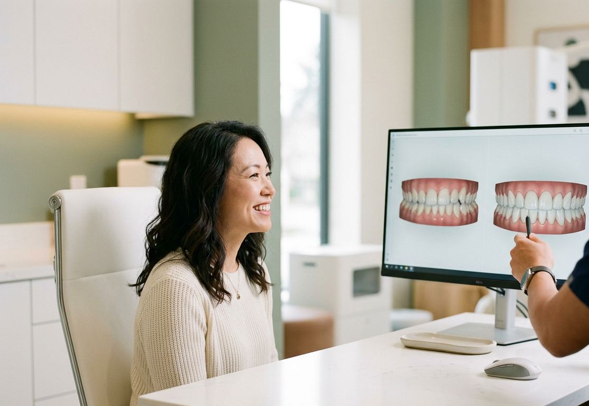
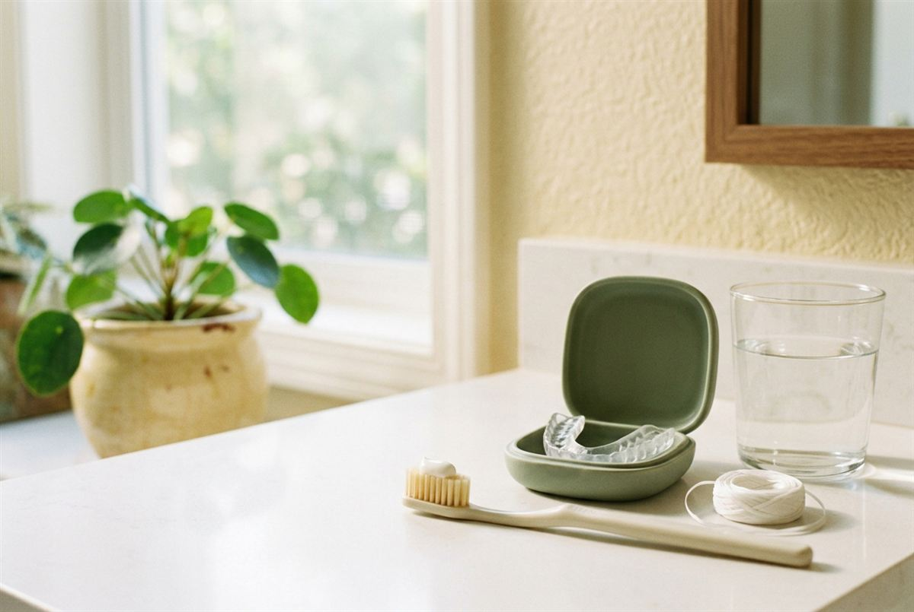

Something about your smile has been bothering you for a while. A chipped front tooth, a gap, teeth that look darker than they used to, or one tooth that just sits differently to the others. You are not being vain, and it is not a silly thing to want fixed.
See it firstDigital scan and a preview before any tooth is touched
Payment plansAll health funds, claimed on the spot
Cosmetic dentistry is about changing how your teeth look while keeping them healthy.
That might be a single appointment to whiten or repair one tooth, or a planned set of treatments over a few months. Either way, we start with what bothers you and work out the most conservative way to fix it.
Beyond 32 Dental has been looking after families across Pennant Hills and the Hills District since 2013. You will get honest advice, including when the answer is that you need less than you thought.
What is cosmetic dentistry?
Cosmetic dentistry is any dental treatment where the main aim is improving the appearance of your teeth and smile. It covers colour, shape, size, alignment and the gaps between teeth.
The common concerns we see are:
Teeth that have yellowed or stained over time
Chipped, cracked or worn front teeth
Gaps between teeth
Crooked or crowded teeth
Teeth that are uneven in length or shape
Old fillings or crowns that no longer match
A single dark or discoloured tooth
The line between cosmetic and general dentistry is blurrier than it sounds. A crown that restores a broken tooth also changes how it looks. Straightening crowded teeth makes them easier to clean.
Most good cosmetic work does both.
Is cosmetic dentistry just about looks?
Mostly, but not only.
Worn teeth can be rebuilt to protect what is left. Closing gaps can stop food trapping. Straight teeth are easier to keep free of plaque.
We will tell you plainly which parts of a plan are for appearance and which are for health, so you can decide what matters to you.
Do I need a check up first?
Yes.
Cosmetic treatment sits on top of healthy teeth and gums, not in place of them. Decay or gum disease underneath veneers, bonding or whitening will undo the result and can make things worse.
If you are due, we can do your check up and clean and cosmetic consultation together.
Professional teeth whitening
Teeth whitening is the simplest cosmetic treatment and often the right place to start.
A peroxide gel breaks down the stain molecules inside the enamel, lightening the tooth from within rather than just polishing the surface. We offer two options:
Done in one visit of about ninety minutes. A stronger gel is applied under supervision and activated with a light. You leave with noticeably whiter teeth and a mini take-home kit for touch-ups.
Time
About ninety minutes
Result
Same day
At your paceCustom traysBuilds over a couple of weeks
Gradual whitening at home, with trays made for your teeth.
Read moreShow less
We scan your teeth and make custom trays that fit precisely. You wear them with a professional gel for a set time each day, and the colour builds gradually over a couple of weeks.
Time
A set time each day
Result
Over a couple of weeks
Many people do in-chair first, then use the take-home trays a few times a year to keep it there.
What whitening can and cannot do
Works well
Whitening works well on yellowing from age and staining from tea, coffee, red wine and smoking.
Less predictable
It works less predictably on grey staining, some medication stains and a single tooth that has darkened after a knock.
No effect
It has no effect on fillings, crowns, veneers or bonding. They stay the colour they were made.
If you have visible restorations at the front, we will talk you through how they will look next to whiter teeth before you start.
Why not use a supermarket kit?
Strips and online kits use weaker gel in trays that do not fit, so the gel leaks onto gums and misses the edges of the teeth. Some imported products contain ingredients that are not permitted in Australian dental products. Results are patchy at best.
Professional whitening is not just stronger. It is controlled, your gums are protected, and we check your teeth first so you are not bleaching over a cavity.
Does whitening make teeth sensitive?
It can, for a day or two. The gel temporarily opens tiny channels in the enamel, which lets cold reach the nerve more easily. We apply a desensitising gel and can adjust the treatment if you already have sensitive teeth.
How long does teeth whitening last?
Anywhere from several months to a couple of years. Coffee, tea, red wine and smoking bring the stain back faster. Occasional top-ups with your take-home trays keep it where you want it.
Avoid dark drinks and strongly coloured food for the first 48 hours, when teeth pick up stain most easily.
Porcelain and composite veneers
A veneer is a thin layer of tooth-coloured material bonded to the front of a tooth.
It changes the colour, shape and length of that tooth, and can close small gaps or disguise mild crookedness. There are two kinds of veneers, and the difference matters.
Composite
Composite veneers
Composite veneers are made from tooth-coloured resin sculpted directly onto your teeth in the chair. Little or no tooth is removed, they are usually done in one visit, and they cost less. The trade-off is that resin can stain and chip over time and generally needs polishing or repair sooner.
Porcelain
Porcelain veneers
Porcelain veneers are made from ceramic in a lab, from a digital scan of your teeth. They look more like natural enamel, resist staining, and typically last longer. They take two or more appointments, and a thin layer of enamel usually needs to be removed so the veneer does not look bulky.
What happens when you get veneers?
Five steps, from first chat to final check.
Step1
Consultation
We check your teeth and gums, talk about what you want changed, and take photos and a digital scan.
Step2
Planning
We show you how the finished shape and shade could look before any tooth is touched. For porcelain, a trial smile can be placed on your teeth so you can see it in your own face.
Step3
Preparation
For porcelain, a small amount of enamel is reshaped under local anaesthetic and temporary veneers are fitted. For composite, the teeth are cleaned and lightly roughened.
Step4
Fitting
Porcelain veneers are bonded in place once they return from the lab. Composite is built up, shaped and polished on the day.
Step5
Review
We check your bite and how the veneers sit with your gums a few weeks later.
Before any tooth is touchedSee your planned shape and shade
Are veneers permanent?
Porcelain veneers are effectively a permanent decision, because the enamel removed to place them does not grow back. The veneers themselves will eventually need replacing, as all dental restorations do.
Composite veneers are more reversible, since little or no enamel is removed. This is one reason we often suggest composite first for younger patients or anyone unsure.
How long do veneers last?
With good care, porcelain veneers commonly last ten to fifteen years or more. Composite veneers more often need attention within five to seven years. Grinding, biting nails or pens, and skipping check ups all shorten that.
Should I whiten before veneers?
Usually, yes. Veneers are made to match the teeth beside them and will not change colour afterwards. If you want your natural teeth lighter, whiten first, then we match the veneers to your new shade.
Composite bonding is the quickest and most conservative way to change the shape of a tooth.
Tooth-coloured resin is applied to the tooth, sculpted by hand, hardened with a light and polished. It is the same material as composite veneers, used on a smaller area.
BeforeAfter
It is well suited to:
Most bonding is done in a single appointment, often without anaesthetic, and with no drilling of healthy tooth.
Repairing a chipped or broken edge
Closing a small gap between front teeth
Evening out teeth that are slightly different lengths
Covering a small stain or mark that whitening will not shift
Rebuilding edges worn down by grinding
Can a chipped tooth be fixed in one visit?
In most cases, yes.
A small to moderate chip on a front tooth can usually be rebuilt with bonding in under an hour, shade-matched so it blends in.
A large break, or one that reaches the nerve, may need a crown or other treatment instead. If the chipped or broken tooth happened recently and is painful, call us, because that is treated as urgent.
How long does bonding last?
Typically several years.
Typically several years before it needs a polish, repair or redo. It is not as hard as enamel or porcelain, so biting directly into hard food with bonded edges, or chewing pens and fingernails, will shorten its life. The upside is that it is easy to touch up.
Other cosmetic treatments
Whitening, veneers and bonding cover most cosmetic concerns, but some problems are better solved another way.
Crowns
A crown covers the whole tooth rather than just the front. It is the better choice when a tooth is heavily filled, cracked, root-filled, or too weak to hold a veneer. Modern ceramic crowns are made to match the teeth around them.
If the main issue is crooked or crowded teeth, moving them is often better than covering them. Straightening keeps your natural enamel intact, and it can mean veneers are not needed at all, or that far fewer are. We offer Invisalign clear aligners, the Inman Aligner for minor front-tooth crowding, and Damon braces.
Replacing missing teeth
A gap from a missing tooth is a cosmetic and a functional problem. Veneers cannot fill it. Dental implants and bridges can, and they can be planned alongside other cosmetic work so everything matches.
What is a smile makeover?
A smile makeover is a plan that combines more than one treatment to change your smile as a whole, rather than tooth by tooth. A typical example is straightening, then whitening, then bonding or veneers on a few teeth to finish the shape.
The order matters.
Treat gums and decay
Gum and decay problems are treated before any of it.
Straighten
Teeth are straightened before veneers so less enamel is removed.
Whiten
Whitening comes before bonding or veneers so the new work is matched to your lighter shade.
Bonding or veneers
On a few teeth, to finish the shape.

We plan it with photos, a digital scan and a preview of the result, and
we stage it so you can stop at any point you are happy with.
Not sure what you need? That is what the consultation is for.
You do not need to arrive knowing the treatment names. Tell us what bothers you about your smile, and we will show you the options, what each involves, and what it costs, with no pressure to go ahead.
Most adults with healthy teeth and gums are suitable for at least one cosmetic option. The question is which one, and that depends on what you want to change and what your teeth will tolerate.
We may suggest waiting, or a different approach, if you:
Have active decay or gum disease, which needs treating first
Grind or clench heavily, which can chip bonding and crack porcelain unless it is managed with a night guard
Are pregnant or breastfeeding, when we generally hold off on whitening
Are a teenager whose teeth and gums are still settling, where conservative options usually come first
Have very small or heavily worn teeth that would suit crowns better than veneers
Why we lean towards conservative treatment
Every bit of healthy enamel you keep is enamel that never needs repairing.
Where whitening and a little bonding will get you most of the way, we will say so before talking about veneers.
That does not mean we will talk you out of what you want. It means you will know every option, including the smaller ones, before you choose.
What happens at a cosmetic consultation?
We ask what you would like to change and why, examine your teeth and gums, and take photos and a digital scan. Then we go through the options that suit your teeth, roughly how long each takes, how long it lasts, and the cost. You leave with a written plan and no obligation to book anything.
Happy gas and sedation for longer appointments
Does cosmetic dental treatment hurt?
For most people, very little.
Whitening and bonding are usually done without any anaesthetic. Porcelain veneer preparation is done with the area numbed, so you feel pressure and vibration rather than pain.
If you are anxious, tell us. We can take it slowly, numb the area for even small procedures, and offer happy gas or in-house sedation for longer appointments. You can also watch TV from the chair, and ask for our comfort menu when you arrive.
How long is recovery?
NoneThere is no real recovery time for whitening or bonding. You can go straight back to work.
Once numbness wears offAfter veneer preparation under local anaesthetic, wait until the numbness wears off before eating.
A few daysExpect your bite to take a few days to feel normal.
Will my teeth be sensitive afterwards?
Some sensitivity to cold is common after whitening and usually settles within a day or two. After porcelain veneers, teeth can be sensitive for a week or so while they settle. A sensitivity toothpaste helps with both.
If one tooth stays sensitive for more than a couple of weeks, let us know so we can check it.
How much does cosmetic dentistry cost?
It depends entirely on what you have done and how many teeth are involved.
Whitening is a single fixed fee. A full smile makeover is a staged plan. We give you a written quote at your consultation, and that is the price you pay.
As a guide to how the options compare, from lowest to highest cost per tooth: whitening, composite bonding, composite veneers, porcelain veneers and crowns. Straightening and implants are priced as whole treatments.
What should be included in a quote?
The consultation, photos and digital scan
Any check up, clean or X-rays needed first
Each treatment itemised, per tooth where relevant
Lab fees for porcelain work
Temporary veneers or a trial smile, if used
Review appointments
When comparing quotes between clinics, check whether the material is the same (porcelain or composite), how many teeth are included, and whether planning and reviews are extra.
Does private health insurance cover cosmetic dentistry?
Sometimes, partly. Purely cosmetic treatment such as whitening is usually not covered. Veneers, crowns and bonding are often claimable under major dental extras, and straightening under orthodontic cover, depending on your policy and waiting periods.
We accept all health funds and claim on the spot. Give us your fund details and we can check what your policy will contribute before you commit.
Can I pay it off?
Yes. We offer payment plans so larger treatments can be spread over time rather than paid in one go.
Cosmetic work lasts longest on teeth that are looked after well. Most of it is the same routine that keeps natural teeth healthy, with a few additions.

Keep up your check ups and cleans
Veneers and bonding can still have decay or gum disease form around their edges. We also polish bonding and check veneer margins at each visit.
Brush and clean between your teeth daily
Use a soft brush and a non-abrasive toothpaste. Gritty whitening pastes can dull the polish on composite.
Wear a night guard if you grind
Grinding is the most common reason veneers and bonding chip. A custom guard is far cheaper than replacing them.
Do not use your teeth as tools
Opening packets, biting nails or chewing pens puts edge-on force on veneers that they are not designed for.
Go easy on staining drinks
Porcelain resists stain, but composite and your natural teeth do not. A straw and a rinse with water help.
Top up whitening occasionally
If you have custom trays, a few nights a year keeps your natural teeth matched to your restorations.
See the results
Cosmetic dentistry before and after photos show the difference most clearly in colour, edge shape and the spacing between front teeth. Each case below was planned around the patient’s own teeth and goals, so the results look different from person to person.
BeforeAfter
Porcelain veneers
6 teeth · 3 appointments · 4 weeks
BeforeAfter
Composite veneers
4 teeth · 1 appointment
BeforeAfter
Ceramic crowns
4 teeth · 2 appointments
Patient images are published with consent and are intended for educational purposes only. Results vary between individuals, and all dental procedures carry risks.
Beyond 32 Dental is at 1st Floor, 114 Yarrara Rd, Pennant Hills, a short walk from Pennant Hills station with parking on site. If you are looking for cosmetic dentistry in this part of Sydney, we see patients from Cherrybrook, West Pennant Hills, Thornleigh, Beecroft, Castle Hill, Glenhaven, Dural, Westleigh and across the Hills District.
Thousands of whitening cases completed, with in-chair Zoom and custom take-home options
Porcelain and composite veneers, bonding, crowns, Invisalign, Inman Aligner and Damon braces under one roof
Digital scanning instead of messy moulds, and a preview of your result before treatment starts
Happy gas, in-house sedation and a comfort menu for anxious patients
All health funds accepted with on the spot claiming, plus payment plans
Saturday appointments
Frequently asked questions
Still unsure about something? Call us on (02) 9158 6334 and ask.
What does cosmetic dentistry include?
Treatments that improve how your teeth look, including teeth whitening, composite bonding, porcelain and composite veneers, crowns and teeth straightening. Many people combine two or more in a planned smile makeover.
What is the difference between porcelain and composite veneers?
Composite veneers are resin sculpted onto the teeth in one visit, with little or no enamel removed, at a lower cost. Porcelain veneers are made in a lab, look more like natural enamel, resist staining and usually last longer, but need more than one visit and some enamel removal.
How long do veneers last?
Porcelain veneers commonly last ten to fifteen years or more with good care. Composite veneers more often need repair or replacement within five to seven years. Grinding and biting hard objects shorten both.
Is teeth whitening safe?
Yes, when it is done or supervised by a dentist. We check your teeth first, protect your gums, and use a gel strength suited to you. Temporary sensitivity is the most common side effect and usually passes within a day or two.
Can a chipped tooth be fixed in one appointment?
Usually, yes. Most small to moderate chips can be repaired with composite bonding in under an hour, colour-matched to the tooth.
Can I whiten veneers or crowns?
No. Whitening gel only works on natural enamel. If you want your teeth lighter, whiten before getting veneers or crowns so they can be matched to your new shade.
Does health insurance cover cosmetic dentistry?
Whitening is usually not covered. Veneers, crowns and bonding may be claimable under major dental extras, and straightening under orthodontic cover, depending on your policy. We can check your cover before you start.
Does cosmetic dental treatment hurt?
Whitening and bonding usually need no anaesthetic. Porcelain veneer preparation is done with the area numbed. Happy gas and in-house sedation are available if you are anxious.
Any surgical or invasive procedure carries risks. Before proceeding, you should seek a second opinion from an appropriately qualified health practitioner.